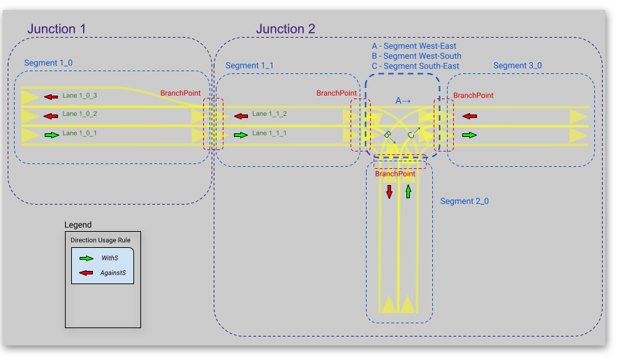

Maliput Overview¶
Table of Contents
Summary¶
A C++ runtime API describing a Road Network model for use in agent and traffic simulations. It guarantees a continuous description of the road geometry and supports dynamic environments with varying rules states. There are currently several implementations of maliput, the most complex one is based on OpenDRIVE specification.
Features¶
- G1 Contiguous road geometry description with tolerance control.
- Lane-FRAME and Inertial-FRAME support.
- Customizable traffic rules.
- Handles dynamic rule environments.
- Supports Traffic Lights.
- Convenience functions to query the Road Network and its Rules.
- Available maliput backend based on OpenDRIVE specification.
- Plugin architecture to extend Road Network implementation.
- C++ 17 compatible API.
- Python bindings.
- Support for ROS2 Foxy.
- BSD 3-Clause License.
TLDR: Jump to Why Maliput? section to learn what it provides and compare it against other map specifications. Disclaimer: this is not another map specification.
Maliput components¶
Road Network¶
maliput is a runtime API that describes the road volume and connectivity graph. The road model is accessed via an abstract C++ API.
maliput is agnostic of the data source for a road network. Concrete implementations for different data sources will expose the same abstract interface. Some networks may be completely synthetic (i.e. they are built from the road surface mathematical function), others will be created from measurements of real-life roads (i.e. sampled surfaces).
Road Geometry model¶
In the lexicon of maliput and its C++ API, the road volume manifold is called a RoadGeometry. A RoadGeometry is partitioned into Segments, which correspond to stretches of asphalt (and the space above and/or below them). Each Segment is a group of one or more adjacent Lanes. A Lane corresponds to a lane of travel on a road, and defines a specific parameterization of the parent Segment’s volume from a local Lane-Frame into the Inertial-frame. Lanes are connected at BranchPoints, and the graph of Lanes and BranchPoints describes the topology of a RoadGeometry. Segments which map to intersecting volumes of the Inertial-frame (e.g., road intersections) are grouped together into Junctions. The semantic direction of the lane isn’t defined by the geometry but by traffic rules. Almost all lane properties will be defined by rules because of their convenient state dynamics.
To summarize, there are two complementary object graphs in maliput. The container hierarchy (Junctions contain Segments, which contain Lanes) groups together different parts of the entire road surface. Solving the routing graph (Lanes are joined end-to-end via BranchPoints) allows to derive routes in the road network.
A RoadGeometry may also model laterally adjacent paths to the road, such as sidewalks. If there is no G1 continuity between the road and its adjacent paths, the two must be separated by Segment boundaries. It does not violate maliput’s continuity constraint because maliput has no notion of laterally-adjacent Segments.
Frames¶
- The Inertial-Frame is any right-handed 3D inertial Cartesian coordinate system, with orthonormal basis (x̂, ŷ, ẑ) and positions expressed as triples (x,y,z).
- The Lane-frame is a right-handed orthonormal curvilinear coordinate system, with positions expressed as coordinates (s,r,h). Each Lane in a
RoadGeometrydefines its own embedding into the Inertial space, and thus each Lane has its own Lane-Frame.
G1 Contiguity¶
G1 contiguity is controlled via a linear tolerance (measured in meters) and an angular tolerance (measured in radians). Tolerances are checked at the BranchPoints by maliput API and it is required that the implementation respects them for all points the RoadGeometry volume.
Road Network Example¶
TODO: Mention about queries provided to traverse the graph.
Intersections¶
maliput provides a register of Intersections called IntersectionBook which holds all the Intersections in the map. Each Intersection aggregates related entities by zone and applied rules and their states.
Traffic Rules¶
Rules¶
In maliput the rules have the following properties:
- zone: the lane route where the rule applies.
- type: user defined rule types: speed-limit rule, right-of-way rule, direction usage rule, vehicle usage rule, etc.
- states: Each rule could be static (ie. it has one state) or dynamic (it has multiple states). The API supports having states that are either a discrete valued (which are named by string labels) or define a contiguous range of a quantity (a.k.a. DiscreteValueRule and RangeValueRule). Each state has the following properties:
- severity: A non-negative quantity that specifies the level of enforcement.
- related rules: Holds groups of rules that are related to the one being described.
- related unique ids: Holds groups of related uniques ids typically used for traffic lights’ bulb groups.
RoadRulebook¶
A RoadRulebook contains the rules for a road network. It allows to query them based on their ID and route.
Filling the book¶
- The RoadRulebook can be filled with rules by two different ways:
- Manually (or by procedural code) by using the ManualRoadRulebook API.
- Automatically by loading a YAML file where all the rules were previously described.
RuleRegistry¶
The RuleRegistry works as a register of rule types to validate the rule type consistency. A properly created and filled RoadRulebook must contain rules whose type exists in the RuleRegistry.
- The RuleRegistry can be filled with rules by two different ways:
- Manually, by using the RuleRegistry API.
- Automatically, by loading a YAML file where all the rule types were previously described.
Traffic Lights¶
maliput has support for traffic lights in the RoadNetwork.
- A TrafficLight models the signaling device that are typically located at road intersections. It is composed by one or more groups of light bulbs called BulbGroup. For each TrafficLight an unique id and a pose in the Inertial-frame is defined.
- A BulbGroup models a group of light bulbs within a traffic light. Pose is relative to the traffic light that holds it.
- A Bulb models a light bulb within a BulbGroup. The pose is relative to the BulbGroup it belongs. Each Bulb has a collection of possible states (e.g: On, Off, Blinking).
Consequently, it is possible to define pretty complex traffic lights arrays.
Dynamic Rules¶
maliput supports dynamic rule states. Having more than one possible state per rule and bulbs allows to define complex relations between them for a given region. maliput offers a set of convenient classes to ease the general state transition management,
Phases¶
- In a typical road intersection, we may identify at least two maliput entities whose states may change.
- The Bulbs’ state in TrafficLights.
- The rule state of dynamic rules. For instance, a DiscreteValueRule whose type is Right-Of-Way.
To couple the Bulb and Rule states, maliput introduces the Phases. A Phase aggregates rule states and bulb states. PhaseRings manage the transition cycle between Phases.
TODO: Here there should be a link to more information about phases. Probably to an example as it is the best way to understand phases, phase ring and phase providers.
Maliput Design and Architecture¶
maliput package is in essence a C++ runtime API with most of the classes being purely virtual.
Along the API, other namespaces/libraries are provided by maliput:
- api: Defines the maliput API.
- base: Base implementations of rules and traffic-lights related API.
- geometry_base: Base implementations of geometry-related API.
- common: Contains classes used by other namespaces and packages.(i.g: Logger, errors, etc)
- math: Math library providing support for vector, matrix, quaternion, and roll, pitch and yaw representations.
- plugin: maliput provides a plugin architecture for easily customize certain systems implementations.
- routing: Provides methods to obtain routes in the RoadNetwork graph.
- test_utilities: Contains convenience helpers for testing the RoadNetwork.
- utilities: Provides useful methods and classes related to mesh generation and concurrent task solvers.
- utility: Contains file-handling related methods.
Implementing Maliput backend¶
As we mentioned before maliput defines an API that forces the backends to meet its requirements.
When implementing a maliput backend, the following needs to be taken into account.
1 - Implement classes related to the road geometry model:
- maliput::api::RoadGeometry: It is partially implemented at geometry_base, however the fundamental geometric methods that define the immersion of Lane-Frame into Inertial-Frame is specific to each backend.
- maliput::api::Lane
2 - Populate the RoadNetwork:
- Add Lanes to Segments.
- Add Segments Junctions.
- Add Junctions to the RoadGeometry.
- Populate RoadNetwork related entities: Many of them have a builder at maliput to easily create them.
- RuleRegistry
- RoadRulebook.
- IntersectionBook.
- TrafficLightBook.
- PhaseRingBook.
- PhaseProvider
- DiscreteValueRuleStateProvider
- RangeValueRuleStateProvider
Maliput Plugin Architecture¶
maliput provides an architecture that allows users to customize certain systems implementations in an easy and effective way. maliput’s clients may opt to use the plugin architecture to load at runtime specific backends. That simplifies and unifies the linkage process and reduces the number of compile time dependencies.
For further information refer to Maliput Plugin Architecture page.
Maliput backends¶
Available concrete implementations of the abstract API:
- maliput_dragway : maliput_dragway is an implementation of `maliput’s API that allows users to instantiate a multi-Lane dragway. All lanes in the dragway are straight, parallel, and in the same segment. The ends of each lane are connected together via a “magical loop” that results in vehicles traveling on the Dragway’s lanes instantaneously teleporting from one end of the lane to the opposite end of the lane. The number of lanes and their lengths, widths, and shoulder widths are all user customizable.
- maliput_multilane: maliput_multilane is an implementation of maliput’s API that allows users to instantiate a RoadNetowork with the following relevant characteristics:
- Multiple Lanes are allowed per Segment.
- Constant width Lanes.
- Segments with lateral asphalt extensions, a.k.a. shoulders.
- Line and Arc base geometries, composed with cubic elevation and superelevation polynomials.
- Semantic Builder API.
- YAML based map description.
- Adjustable linear tolerance.
- The number of lanes and their lengths, widths, and shoulder widths are all user specifiable.
- maliput_malidrive : maliput_malidrive is an implementation of maliput’s API that allows users to instantiate a RoadNetwork based on the OpenDRIVE specification which allows defining complex RoadGeometry as the standard guarantees.
- OpenDRIVE based map description.
- Multiple Lanes per Segment.
- Line and Arc base geometries, composition is allowed.
- Elevation profile defined by piecewise-defined cubic polynomials
- Lateral profile defined by piecewise-defined cubic polynomials * Supports superelevation description.
- Varying lane width.
- Adjustable linear tolerance.
TODO: Create diagram showing maliput as api and the backends.
Maliput Python interface¶
Python bindings are provided by maliput_py package. Only the API is covered.
Dependencies¶
maliput and its related packages have focused on being lightweight and keeping a low number of external dependencies.
The dependencies are listed in the package.xml file of each repository.
Why Maliput?¶
As it was mentioned along the document, maliput proposes an API to query a RoadNetwork model, guaranteeing, among other things, a continuous description of the road (under certain user-defined tolerance) and handling dynamic environments where traffic rules and traffic lights may change according other conditions (e.g.: time events).
maliput does not focus on a specific format, e.g. lanelet2 or OpenDRIVE. It’s a maliput backend the one that will convert / parse / load a specific data bundle described in terms of a specification into a maliput implementation that could be used seamlessly by simulated agents.
TODO: Should this section be located at the top of the document?
Comparison with other libraries¶
Even though there aren’t many open-source map handling frameworks out there, it is worth noting some differences with lanelet2 library to understand the advantages that maliput provides.
Road surface definition
maliput guarantees G1 contiguity on the Road Network surface under certain user-defined tolerance. The description of the surface can be as versatile as it is required by downstream packages. In particular, maliput_malidrive package, which is a maliput backend, is based on the OpenDRIVE specification. This OpenDRIVE specification provides vast control over the physical characteristics that a road may have (e.g.: elevation, banking, crossfall, OpenCRG integration) which endures obtaining a more realistic road surface model. lanelet2 is based on an custom OSM (or derived schema) description format in which the lanes are defined by using two polylines to indicate both left and right boundaries. The lane surface is inferred from the polygons that those two polylines define. The standard only guarantees G0 contiguity by definition and the implementation doesn’t provide tolerance control. Road’s characteristics like elevation and banking profiles could be achieved by using the same points used to define lanes. However, information like crossfall of the road isn’t supported.
Traffic rules descriptions.
In maliput traffic rules can be loaded via YAML file and they are independent of the underlying map format that is being used in the maliput backend. The rules are meant to apply to a zone in particular including one or more consecutive lanes (routes), consequently obtaining the rules that apply to a particular lane range is rather trivial. In lanelet2 the rules are extended by creating Regulatory Elements and adding them into the OSM description file. Computing where each rule starts or ends isn’t straightforward in comparison with maliput. Additional geometry calculations are required to obtain the rule range because there is no Lane-Frame in lanelet2.
Rules dynamic states
maliput supports environments with dynamic rules, that is, rules that change their states based on different conditions (e.g: time). Several entities are provided to gracefully handle these situations. lanelet2 has no builtin support for dynamic rules. Road designer can extend the specification with custom behaviors though.
Intersection’s helpers
In maliput, the intersections of the RoadNetwork are identified to easily manage the state of the rules that apply to a particular intersection (e.g: Right-Of-Way rules depending on traffic light’s bulb states.). On the contrary, identifying crossing roads and the rules that apply to the intersection could be rather challenging in lanelet2.